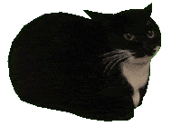

About Me
Hey, welcome to my homepage. :D
I am a 1st year DPhil student at Active Vision Group, University of Oxford, jointly supervised by Professor Victor Prisacariu and Dr. Iro Laina. I also work closely with Xinghui Li, Dr. Jia-Wang Bian, and Dr. Guangrun Wang.
Before this, I interned at Westlake University, where I was mentored by Professor Liu Peidong.
I obtained my M.Sc. degree with Distinction from Imperial College London.
Prior to that, I received my B.Eng. from the University of Electronic Science and Technology of China (UESTC).
I was awarded the Outstanding Graduate Award of Sichuan Province.